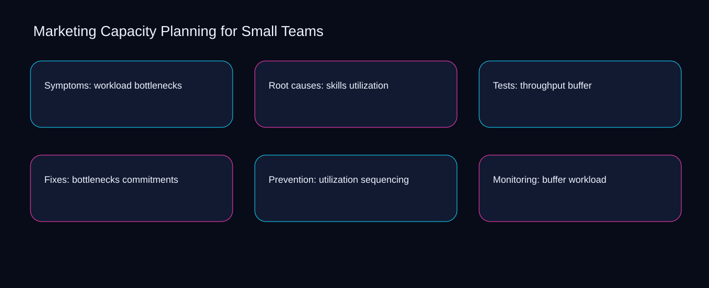

A misconception is that marketing capacity planning for small teams is solved by adding another checklist instead of connecting throughput, bottlenecks, and ownership. A bounded method for turning marketing capacity planning for small teams into an owned, reviewable operating practice. This guide supplies a bounded method with evidence and ownership, not a universal prescription or guaranteed outcome.
Symptoms: workload bottlenecks
Use workload as the entry condition for symptoms: workload bottlenecks and skills as its exit evidence. Define the artifact, owner, acceptance condition, and excluded work. Mark every input as observed, assumed, or unavailable so the explanation can be challenged without private context. Inspect throughput, bottlenecks, utilization, buffer, commitments in the topic-specific walkthrough. Marketing Capacity Planning for Small Teams applies comparison model to symptoms; the scope memo records evidence-to-threshold with sequence-to-verification. Date the workload evidence and name who will verify skills.
Place symptoms: workload bottlenecks inside a bounded scenario involving bottlenecks, utilization, and a named reviewer. Compare a normal path with an exception path. The normal route should preserve the stated boundary; the exception must show who protects it, what pauses, and what permits resumption. Inspect buffer, commitments, sequencing, workload, skills in the topic-specific walkthrough. Marketing Capacity Planning for Small Teams applies comparison model to symptoms; the boundary map records evidence-to-threshold with sequence-to-verification. The record closes when bottlenecks has an owner and utilization has an observable trigger.
causal analysis checkpoint
Symptoms: workload bottlenecks begins by separating commitments from sequencing. Trace the causal chain from the first signal to the recorded outcome. Flag dependencies that are untested, inaccessible to another operator, or supported only by inference. Inspect workload, skills, throughput, bottlenecks, utilization in the topic-specific walkthrough. Marketing Capacity Planning for Small Teams applies comparison model to symptoms; the observation log records evidence-to-threshold with sequence-to-verification. If evidence breaks between commitments and sequencing, return to diagnosis instead of polishing the artifact.
Root causes: skills utilization
A review of root causes: skills utilization should expose throughput, bottlenecks, and the decision they inform. Ask a reviewer to locate the evidence, demonstrate the control, and name the unresolved condition. Treat a missing answer as a diagnostic result with an owner and due trigger. Inspect utilization, buffer, commitments, sequencing, workload in the topic-specific walkthrough. Marketing Capacity Planning for Small Teams applies comparison model to root causes; the assumption register records evidence-to-threshold with sequence-to-verification. A priority remains provisional until throughput survives the bottlenecks review.
Reopen root causes: skills utilization whenever buffer changes the accepted commitments boundary. Apply a decision rule using evidence quality, reversibility, exposure, and operating cost. Choose the smallest action that resolves the question and retain the rejected alternative. Inspect sequencing, workload, skills, throughput, bottlenecks in the topic-specific walkthrough. Marketing Capacity Planning for Small Teams applies comparison model to root causes; the decision brief records evidence-to-threshold with sequence-to-verification. Keep the rejected option beside buffer so another operator understands the commitments choice.
implementation instruction checkpoint
Use workload as the entry condition for root causes: skills utilization and skills as its exit evidence. Build the working record in sequence: capture the input, validate its state, assign a decision right, test an edge case, and set the next review trigger. Inspect throughput, bottlenecks, utilization, buffer, commitments in the topic-specific walkthrough. Marketing Capacity Planning for Small Teams applies comparison model to root causes; the implementation ticket records evidence-to-threshold with sequence-to-verification. Date the workload evidence and name who will verify skills.
Tests: throughput buffer
Place tests: throughput buffer inside a bounded scenario involving skills, throughput, and a named reviewer. Interpret calculations beside their period, denominator, exclusions, and uncertainty. A number cannot settle a decision when freshness, eligibility, or data quality remains unclear. Inspect bottlenecks, utilization, buffer, commitments, sequencing in the topic-specific walkthrough. Marketing Capacity Planning for Small Teams applies comparison model to tests; the calculation sheet records evidence-to-threshold with sequence-to-verification. The record closes when skills has an owner and throughput has an observable trigger.
Tests: throughput buffer begins by separating utilization from buffer. Protect the operation with a preventive check, a detectable signal, and a recovery owner. Define the stop condition before the team encounters the exception. Inspect commitments, sequencing, workload, skills, throughput in the topic-specific walkthrough. Marketing Capacity Planning for Small Teams applies comparison model to tests; the control register records evidence-to-threshold with sequence-to-verification. If evidence breaks between utilization and buffer, return to diagnosis instead of polishing the artifact.
exception handling checkpoint
A review of tests: throughput buffer should expose sequencing, workload, and the decision they inform. Document exceptions separately from defaults. Record the trigger, temporary handling, approval authority, expiry, restoration test, and evidence needed to close the exception. Inspect skills, throughput, bottlenecks, utilization, buffer in the topic-specific walkthrough. Marketing Capacity Planning for Small Teams applies comparison model to tests; the exception note records evidence-to-threshold with sequence-to-verification. A priority remains provisional until sequencing survives the workload review.

Fixes: bottlenecks commitments
Reopen fixes: bottlenecks commitments whenever throughput changes the accepted bottlenecks boundary. Rank actions by decision value, dependency, reversibility, and effort. Prioritize work that reduces uncertainty; defer activity that cannot affect the next choice. Inspect utilization, buffer, commitments, sequencing, workload in the topic-specific walkthrough. Marketing Capacity Planning for Small Teams applies comparison model to fixes; the priority queue records evidence-to-threshold with sequence-to-verification. Keep the rejected option beside throughput so another operator understands the bottlenecks choice.
Use buffer as the entry condition for fixes: bottlenecks commitments and commitments as its exit evidence. Use each reference for a narrow claim function. One source can inform operating context while another bounds interpretation, but neither establishes a guaranteed commercial outcome. Inspect sequencing, workload, skills, throughput, bottlenecks in the topic-specific walkthrough. Marketing Capacity Planning for Small Teams applies comparison model to fixes; the source ledger records evidence-to-threshold with sequence-to-verification. Date the buffer evidence and name who will verify commitments.
measurement guidance checkpoint
Place fixes: bottlenecks commitments inside a bounded scenario involving workload, skills, and a named reviewer. Pair a leading signal with an outcome signal and a data-quality check. Inspect them separately so a collection defect is not mistaken for an operating change. Inspect throughput, bottlenecks, utilization, buffer, commitments in the topic-specific walkthrough. Marketing Capacity Planning for Small Teams applies comparison model to fixes; the measurement card records evidence-to-threshold with sequence-to-verification. The record closes when workload has an owner and skills has an observable trigger.
Prevention: utilization sequencing
Prevention: utilization sequencing begins by separating throughput from bottlenecks. Set cadence according to change risk rather than calendar habit. Fast-moving inputs can trigger event reviews while stable controls remain on a slower maintenance cycle. Inspect utilization, buffer, commitments, sequencing, workload in the topic-specific walkthrough. Marketing Capacity Planning for Small Teams applies comparison model to prevention; the cadence calendar records evidence-to-threshold with sequence-to-verification. If evidence breaks between throughput and bottlenecks, return to diagnosis instead of polishing the artifact.
A review of prevention: utilization sequencing should expose buffer, commitments, and the decision they inform. Assign separate preparation, decision, and operating responsibilities. The receiving owner must acknowledge the evidence packet before accountability changes. Inspect sequencing, workload, skills, throughput, bottlenecks in the topic-specific walkthrough. Marketing Capacity Planning for Small Teams applies comparison model to prevention; the ownership matrix records evidence-to-threshold with sequence-to-verification. A priority remains provisional until buffer survives the commitments review.
escalation condition checkpoint
Reopen prevention: utilization sequencing whenever workload changes the accepted skills boundary. Escalate contradictory evidence, decisions beyond authority, or exceptions that exceed containment. Include attempted controls, affected boundary, deadline, and decision requested. Inspect throughput, bottlenecks, utilization, buffer, commitments in the topic-specific walkthrough. Marketing Capacity Planning for Small Teams applies comparison model to prevention; the escalation packet records evidence-to-threshold with sequence-to-verification. Keep the rejected option beside workload so another operator understands the skills choice.
Monitoring: buffer workload
Use bottlenecks as the entry condition for monitoring: buffer workload and utilization as its exit evidence. Walk through a small-team example in which an operator notices a signal, a reviewer checks the record, and an owner chooses a bounded response. Repeat with a failure path. Inspect buffer, commitments, sequencing, workload, skills in the topic-specific walkthrough. Marketing Capacity Planning for Small Teams applies comparison model to monitoring; the scenario transcript records evidence-to-threshold with sequence-to-verification. Date the bottlenecks evidence and name who will verify utilization.
Place monitoring: buffer workload inside a bounded scenario involving commitments, sequencing, and a named reviewer. State the limitation directly. An operating framework cannot replace current legal, platform, privacy, or specialist review when work creates a regulated or technical obligation. Inspect workload, skills, throughput, bottlenecks, utilization in the topic-specific walkthrough. Marketing Capacity Planning for Small Teams applies comparison model to monitoring; the limitation note records evidence-to-threshold with sequence-to-verification. The record closes when commitments has an owner and sequencing has an observable trigger.
tradeoff checkpoint
Monitoring: buffer workload begins by separating skills from throughput. Expose the tradeoff before acting. Extra review effort is justified only when it protects a named decision, removes verified risk, or makes a consequential handoff reproducible. Inspect bottlenecks, utilization, buffer, commitments, sequencing in the topic-specific walkthrough. Marketing Capacity Planning for Small Teams applies comparison model to monitoring; the tradeoff record records evidence-to-threshold with sequence-to-verification. If evidence breaks between skills and throughput, return to diagnosis instead of polishing the artifact.
Verification: commitments skills
A review of verification: commitments skills should expose throughput, bottlenecks, and the decision they inform. Reject artifact collection without decision use. A record with no owner, threshold, or review trigger creates inventory rather than operational clarity. Inspect utilization, buffer, commitments, sequencing, workload in the topic-specific walkthrough. Marketing Capacity Planning for Small Teams applies comparison model to verification; the anti-pattern review records evidence-to-threshold with sequence-to-verification. A priority remains provisional until throughput survives the bottlenecks review.
Reopen verification: commitments skills whenever buffer changes the accepted commitments boundary. Verify with a second operator who did not author the record. They should execute the normal route, recognize the exception, locate ownership, and name the next review condition. Inspect sequencing, workload, skills, throughput, bottlenecks in the topic-specific walkthrough. Marketing Capacity Planning for Small Teams applies comparison model to verification; the verification receipt records evidence-to-threshold with sequence-to-verification. Keep the rejected option beside buffer so another operator understands the commitments choice.
explanation checkpoint
Use workload as the entry condition for verification: commitments skills and skills as its exit evidence. Reconcile the maintenance history against the current boundary. Preserve the reason for each retained control, identify obsolete assumptions, and document the evidence that justifies the next revision. Inspect throughput, bottlenecks, utilization, buffer, commitments in the topic-specific walkthrough. Marketing Capacity Planning for Small Teams applies comparison model to verification; the dependency map records evidence-to-threshold with sequence-to-verification. Date the workload evidence and name who will verify skills.
Maintenance: sequencing throughput
Place maintenance: sequencing throughput inside a bounded scenario involving workload, skills, and a named reviewer. Contrast the current operating state with the intended state. Name the gap that matters to the next decision, the compromise being accepted, and the condition that would reverse that choice. Inspect throughput, bottlenecks, utilization, buffer, commitments in the topic-specific walkthrough. Marketing Capacity Planning for Small Teams applies comparison model to maintenance; the handoff acknowledgement records evidence-to-threshold with sequence-to-verification. The record closes when workload has an owner and skills has an observable trigger.
Maintenance: sequencing throughput begins by separating bottlenecks from utilization. Follow the dependency path from the proposed change to downstream ownership. Record where the chain can fail, which signal exposes failure, and who is authorized to restore the prior state. Inspect buffer, commitments, sequencing, workload, skills in the topic-specific walkthrough. Marketing Capacity Planning for Small Teams applies comparison model to maintenance; the maintenance trigger records evidence-to-threshold with sequence-to-verification. If evidence breaks between bottlenecks and utilization, return to diagnosis instead of polishing the artifact.
diagnostic prompt checkpoint
A review of maintenance: sequencing throughput should expose commitments, sequencing, and the decision they inform. Run an end-state diagnostic with a fresh reviewer. Ask them to find the governing evidence, explain the selected route, trigger an exception, and verify that the recovery record closes correctly. Inspect workload, skills, throughput, bottlenecks, utilization in the topic-specific walkthrough. Marketing Capacity Planning for Small Teams applies comparison model to maintenance; the change history records evidence-to-threshold with sequence-to-verification. A priority remains provisional until commitments survives the sequencing review.
Reference boundaries
For Marketing Capacity Planning for Small Teams, this private guide uses Marketing and sales from U.S. Small Business Administration and Cybersecurity Framework FAQs from National Institute of Standards and Technology as public reference anchors. The sequence-to-verification reading connects workload, skills, throughput, bottlenecks; the cause-to-control boundary covers utilization, buffer, commitments, sequencing. Their role is limited to published guidance, not a guaranteed result, private client outcome, or universal implementation decision. Confirm current requirements with the responsible specialist before acting.
Close the operating loop
Prioritize the marketing capacity planning for small teams action that resolves skills; sequence throughput behind its dependency and defer bottlenecks. Preserve limitations and rejected options for the next reviewer. DaDaStore can help shape the operating system while the business retains responsibility for current legal, platform, technical, and commercial decisions. The D-business-growth-systems-1 handoff records workload, skills, throughput, bottlenecks, utilization, buffer, commitments, sequencing as topic-specific review inputs.